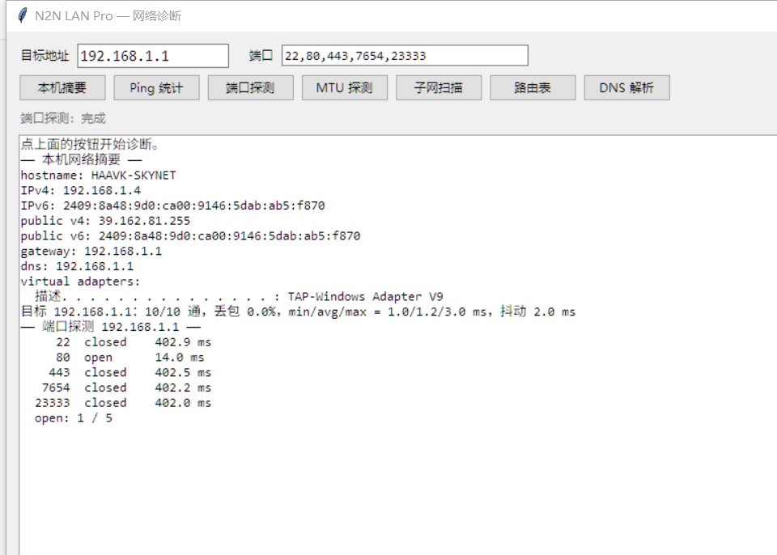

免费版负责「连上」；Pro 版负责「连上之后看得见」。
本机摘要（公网 v4/v6、网关、DNS、虚拟网卡）、整段子网存活扫描（并发 ping + ARP 取 MAC）、端口探测 open/closed/filtered、延迟丢包抖动、MTU 二分探测、路由表与 DNS 反查。
进房 / 退房 / 切网 / 失败原因自动写入 JSONL，面板倒序查看，一键导出 Markdown 报告与 JSON 原始记录，方便留档或贴给同事。
常去房间存成档案（名称 / 房间码 / 身份 / 服务器 / 备注），一键进入或切换，不用每次重新粘贴邀请码。
自定义 supernode、强制 IPv6 或同局域网转发、精细 MTU、可选头部加密、报文转发与 PMTU 发现；另有完全无界面的 CLI，可直接进脚本。

本站可直接下载，也可以把直链交给 IDM / 迅雷 / aria2。Pro 与免费版可以并存在同一台机器上。
独立 AppId，与免费版并存互不影响；自带卸载程序与带图标的桌面快捷方式。v1.0.1 起换成独立图标：主体红色渐变，方块与圆环比例、外边距和免费版一致，右下角深酒红 PRO 角标，没有外层白框。桌面上与免费版蓝色图标一眼分开。
v1.0.2 新增「附近房间」：同一局域网里有人开房（免费版或 Pro 都算）时，工具条会自动显示房间数量，点开列表能看到房间码、房主 IP、人数、可用服务器，双击直接加入，不用再抄邀请码；同时继承免费版的房间成员面板（人数 / 虚拟 IP / 房主）与启动孤儿进程清理。
直链可直接粘贴进 IDM / 迅雷 / Motrix；命令行满速下载：
aria2c -x 16 -s 16 https://github.com/zgs7157/n2n-lan-pro/releases/download/Pro-1.0.2/n2n-lan-pro-setup-1.0.2.exe
校验 sha256：2d3ffdcd46e176e39c89de28af98169cb1bfe479efc335fa557b9765d0a516d1
绿色版（免安装）：n2n-lan-pro.zip（43 MB）
Pro 的界面与诊断引擎全部是 Python 标准库实现（client/n2n_pro_manager.py、client/n2n_pro_core.py），打包脚本 tools/build_pro.ps1，安装脚本 setup_pro.iss。房间码派生与协议直接复用免费版，保证两版互通。
房间码互通示例：J7N3-WD8Y → community room-j7n3-wd8y、网段 10.240.0、密钥 d3ee528c5ac6b776，与免费版逐字一致。
给脚本和自动化用：七个子命令，加 --json 出结构化结果。
python n2n_pro_manager.py --cli doctor python n2n_pro_manager.py --cli scan 192.168.1.0/24 python n2n_pro_manager.py --cli ports 10.240.0.1 -p "22,80,7654,8000-8100" python n2n_pro_manager.py --cli ping 10.240.0.2 -n 10 python n2n_pro_manager.py --cli mtu 192.168.1.1 python n2n_pro_manager.py --cli route python n2n_pro_manager.py --cli dns 10.240.0.1
| 命令 | 作用 |
|---|---|
doctor | 本机网络摘要：主机名、本机/公网 IP、网关、DNS、虚拟网卡 |
scan | 整段子网存活扫描，输出 RTT 与 MAC |
ports | 端口三态探测，支持区间写法 |
ping | 延迟统计：丢包率、min/avg/max、抖动 |
mtu | 最大不分片载荷与链路 MTU |
route / dns | 路由表 / DNS 反查 |
写在前面，省得你踩坑。
Windows 只有一张 TAP 网卡（TAP-Windows Adapter V9），n2n 无法靠设备名区分多实例。所以「房间库」是档案 + 一键切换，切换约 2–5 秒重连，不是真并发。
-H / -A 改变报文头部，免费版不认。默认关闭，只有在「不需要和免费版互通」时才建议打开。
Pro 的自动更新检查已关闭，避免把免费版的新版本误判为 Pro 升级；升级请到本页或 Releases 手动下载。
端口探测走 TCP connect，UDP 服务探不到；扫描速度受并发与超时限制，跨网段扫描会被边界设备拦掉大半——这是网络本身，不是客户端。